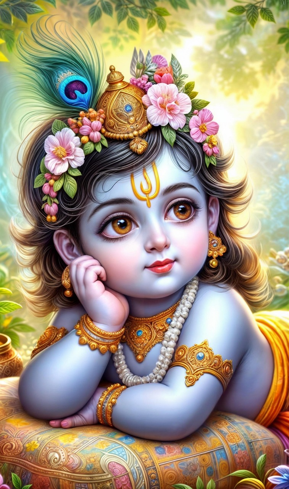
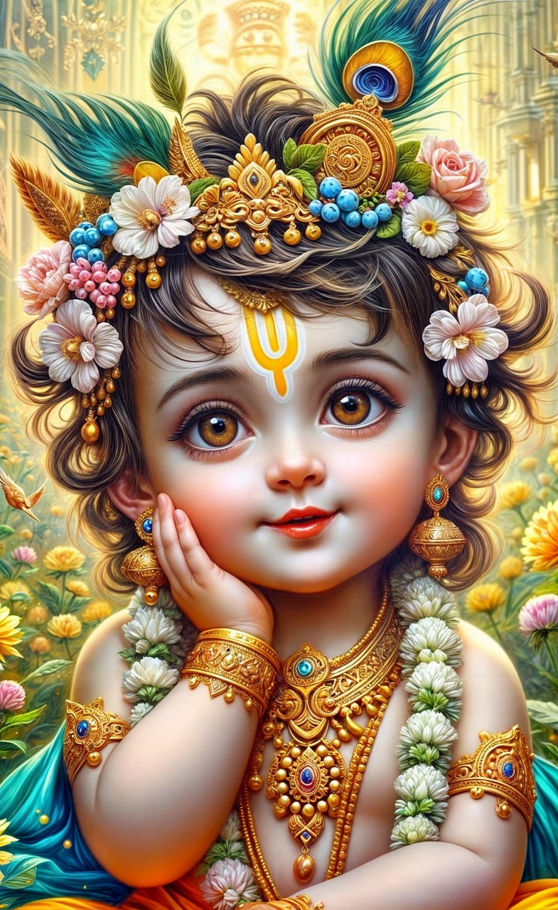

Sri Krishna stands as one of the most radiant and beloved divine figures in Hindu tradition. Worshipped as the eighth avatar of Vishnu, he embodies compassion, wisdom, and the eternal triumph of righteousness. His presence symbolizes hope in times of darkness and guidance in moments of doubt.
| Avatar Number | 8th Avatar in the Dashavatara |
|---|---|
| Yuga | Dvapara Yuga |
| Original (Biological) Parents |
|
| Adoptive (Foster) Parents |
|
In the age of Dvapara Yuga, Krishna’s life unfolded as a divine play filled with purpose and grace. His journey reflects the balance between strength and tenderness, strategy and simplicity, reminding humanity that divinity can exist in everyday life.
As the sacred voice of the Bhagavad Gita, Krishna revealed timeless spiritual truths that continue to guide seekers across generations. His teachings illuminate the paths of duty, devotion, and self-realization, offering clarity to the restless human mind.
Whether through the melody of his flute or the wisdom of his counsel, Krishna inspires hearts with divine love and fearless living. He represents harmony between thought and emotion, action and faith — a timeless symbol of purposeful and graceful existence.
